01 The brand
An unusual art and eyewear shop.
The Artistic Eye is an eyewear shop in Door County, Wisconsin, carrying high-end designer frames alongside original artwork by the artist who runs it.
What it is not
It is deliberately not a conventional optical shop and not a conventional gallery. There is no doctor and no eye exam. The shop sells frames. The identity should always read closer to a boutique or a gallery than to a clinic.
Never describe the shop in a way that suggests a full-scale optical operation. It is a curated shop of roughly 300 frames alongside original artwork.
Tone
Clean, confident, gallery-like. Never busy, never clinical, never cute.
This document states the rules in words so they can be quoted in an email, pasted into a print order, or handed to a vendor. It is written for anyone producing work in the brand's name: printers, sign shops, partner boutiques, and staff.
02 Logo
One piece of artwork.
The primary logo is a two-line lockup. The word artistic sits on the upper line, eye tucks beneath it, and a temple arm extends from the final letter so that eye reads as a pair of glasses.
The lettering is custom, drawn from Aziga and modified. It is supplied as outlines and must never be re-set from live type. The proportions, the spacing, and the position of the temple arm are fixed. Do not rebuild the mark, re-space it, or separate the arm from the lettering.
Approved versions
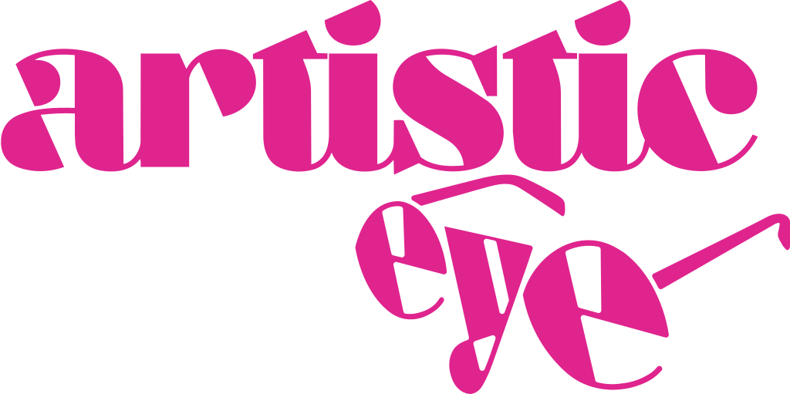
Pink
Primary. The default on light and cream backgrounds.
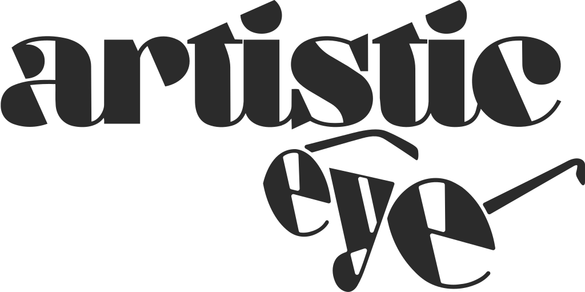
Black
One-colour work: stamps, engraving, faxes, any single-colour print.
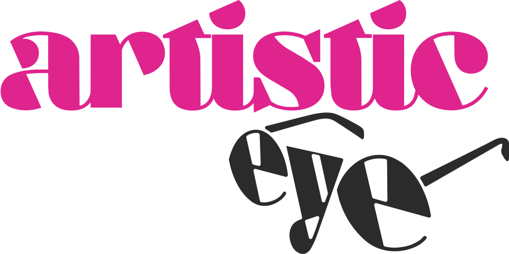
Duotone
Where two-colour printing is available and the field is light.
Reversed
On the pink field or on charcoal. Use the supplied reversed art. Do not invert the positive art by hand.
Clear space
Keep clear space on all four sides equal to the height of the a in artistic. Measured against the supplied artwork, that is 15.5 percent of the mark's width. Nothing enters that zone: no type, no rules, no photography, no edge of the sheet.
The dashed rule sits one a-height out from the artwork on every side.
Minimum sizes
The lettering is high contrast, so the hairlines are the first thing to fail when the mark is reduced or cut in vinyl. At the fifth percentile the thinnest stroke measures 0.70 percent of the logo's width, and every floor below is set from that stroke rather than from taste.
| Where | Minimum width | Hairline at that size |
|---|---|---|
| Screen | 180 px | 1.3 px, so it survives a 1× display |
| 1.25 in / 32 mm | 0.63 pt, clear of the 0.25 pt offset floor | |
| Cut vinyl | 2 in / 51 mm | 1.0 pt, about the floor for weeding |
03 Monogram
A stacked ae, for everywhere the lockup will not fit.
Social profile images, favicons, hang tags, the shop door, stamps, packaging seals, and small merchandise.
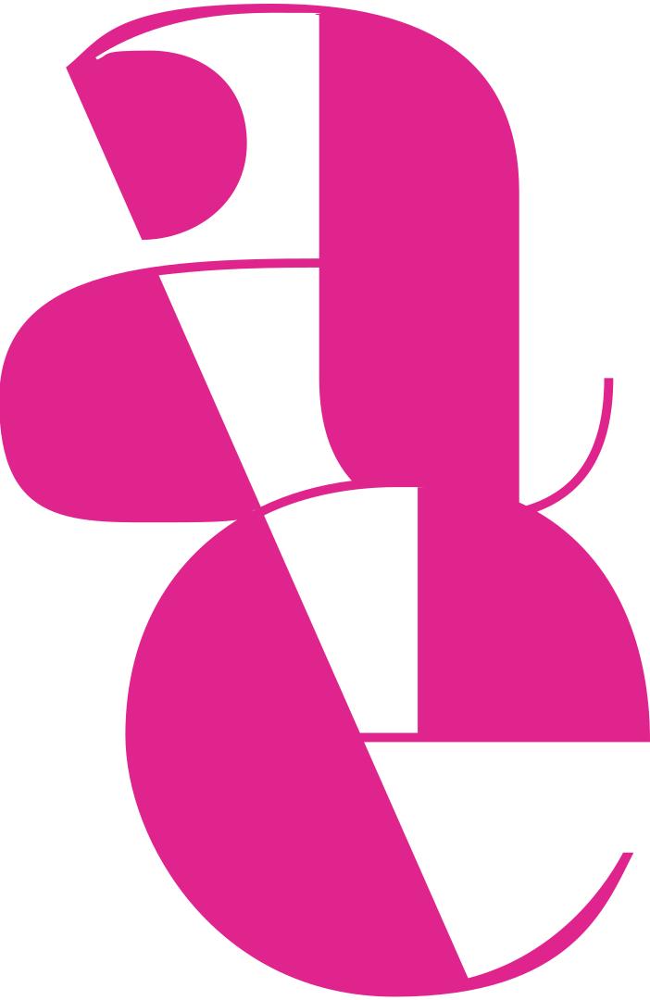
Pink
#DF248E
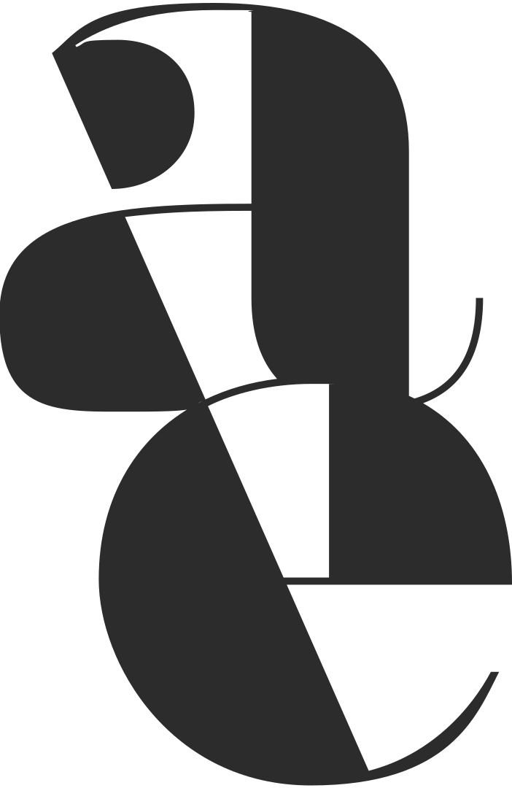
Black
#2B2C2B
Beige
#FBF6F0
Light pink
#F9DCEC
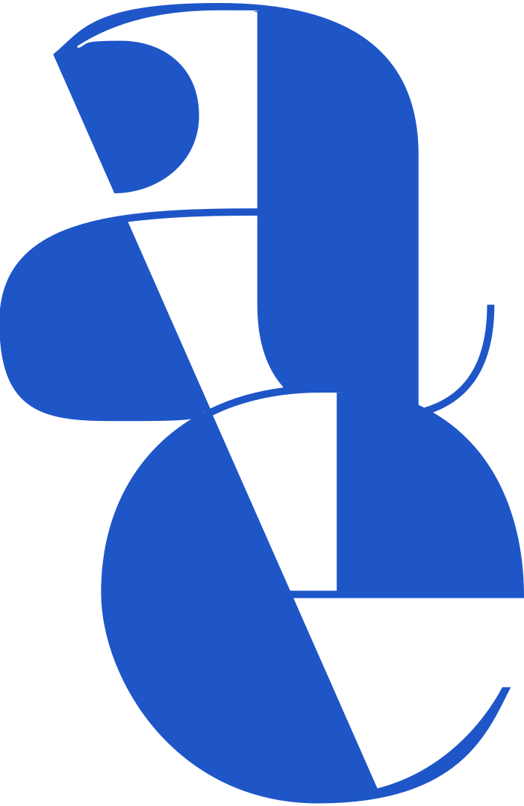
Blue
#1E56C8
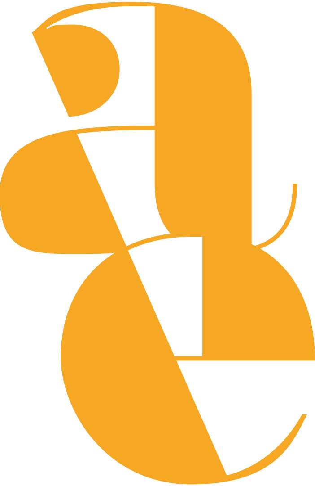
Yellow
#F6A724
Rules
- The monogram is a substitute for the logo, not an addition. Do not place the monogram and the full lockup side by side in the same lockup.
- Same clear-space discipline as the logo.
- Do not add a container, circle, or badge around it unless a supplied version already includes one.
04 Colour
Pink, charcoal, and a warm field.
Every value below is read from the delivered vector artwork rather than retyped from a specification, which is how the two of them drifted apart in the first place.
Artistic Pink
#DF248E
The signature. Carried by every supplied vector: the pink lockup, the duotone, and the pink monogram.
Charcoal
#2B2C2B
Type, the mark, and structure. Not pure black. Where older artwork carries pure black or #2B2B2B, correct it to this value.
Cream field
#FBF6F0
The default background. Warm and gallery-like, never stark white.
Supporting colours
These exist for the monogram colourways and for accents in applications. They are a supporting cast, never a palette to mix from.
Light pink
#F9DCEC
Blue
#1E56C8
Yellow
#F6A724
Proportion
A supporting colour appears only as a garnish on top of that split.
The pink is not settled
Open decision
Two pinks are in circulation, and one of them has to win.
The supplied vectors and the reverse of the business card carry #DF248E. The face of the same business card carries a hotter process pink, #EC008C. Neither is wrong on its own. Together they mean two printers can each follow the files and hand back two different brands.
- #DF248E
Vectors, card reverse - #EC008C
Card face
Until it is settled, specify #DF248E on anything new, because that is what the master artwork contains. This guide states the conflict rather than quietly picking one, because a guide that hides an undecided colour is how the split happened.
Before any spot or vinyl run
- The Pantone match on the pink is an estimate. Confirm it against a physical chip before any spot-colour print run, and record the result here.
- Sign shops cut vinyl to 3M or Oracal numbers, not to Pantone. Specify the vinyl equivalent for the pink and get a physical sample before any window graphic or flag is produced.
- Do not let a shop eyeball the pink from a screen.
05 Typography
One face with all the personality, one with none.
Aziga carries the brand. Neue Haas Grotesk Text is deliberately quiet, which is what lets Aziga do its job.
Aziga
Neue Haas Grotesk Text
Aziga letterspacing is required
Aziga is drawn tight and becomes hard to read set solid. The smaller it gets, the more it needs to open up. This page follows its own table.
art and art for the eye
art and art for the eye
art and art for the eye
Size floors and small format
Do not set Aziga below roughly 10 pt in print. Its hairlines thin out and drop out entirely in offset, in digital, and especially in cut vinyl. Anything below that size is set in Neue Haas Grotesk Text.
| Element | Size |
|---|---|
| Name | 10 to 12 pt |
| Title | 7 to 9 pt |
| Contact details | 8 to 9 pt |
| Absolute floor | 7 pt |
Licensing
Both faces are served through Adobe Fonts. Web projects there are licensed per domain, so every domain that needs live text has to be added to the project before it will render. The licence sits with the subscription holder and does not transfer with the files.
The logo and the monogram are outlined artwork and carry no font dependency, so a vendor can always produce the mark without the fonts.
06 Misuse
Eight ways to break it.
Each tile below shows the mark doing something it must never do.
Do not stretch or condense the mark.
Do not distort its proportions.
Do not rotate it.
Do not recolour it outside the approved colourways.
Do not add shadows, glows, bevels, or gradients.
Do not outline it or rebuild it from live type.
Do not place it on a busy field or one that kills contrast.
Do not go below the minimum size, or into the clear space.
07 Applications
Where it lives.
The shop sits inside the Tambourine Lounge at 59 N Second Ave, Sturgeon Bay, and is not visible from the street. Any exterior application has to solve findability, not just branding.
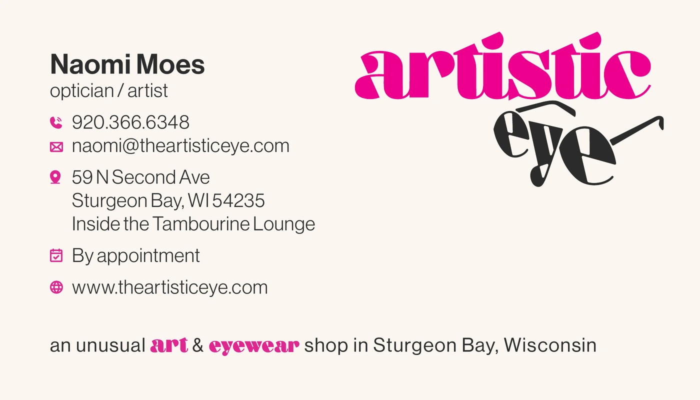
Business card, face
3.5 by 2 inches. Keep all content at least 1/8 inch from trim, with 1/8 inch bleed.
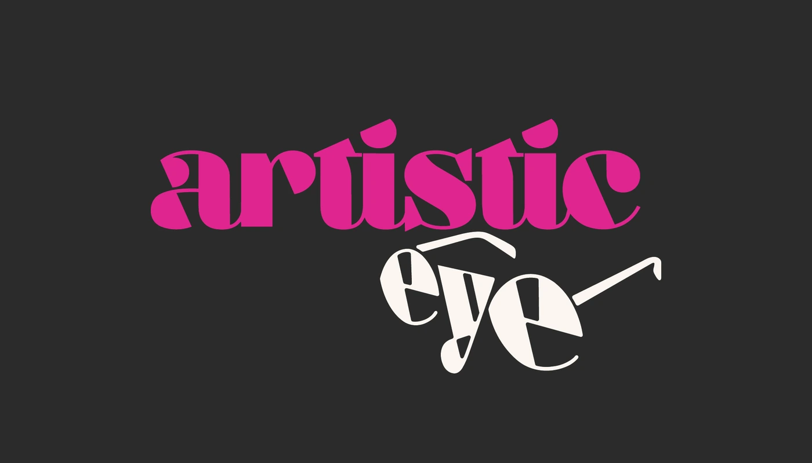
Business card, reverse
The reversed lockup on charcoal, with nothing else on the field.
Vertical formats
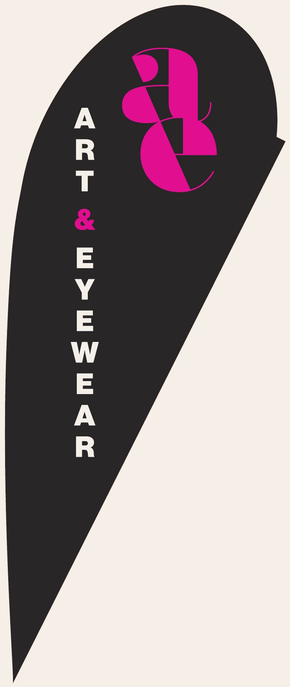
Teardrop flag, one face of two
Feather flags, teardrop flags, and banners are tall and narrow while the primary lockup is horizontal. For these, use a stacked arrangement: monogram, then wordmark, then descriptor.
Keep all wording and logos 2 inches from the edge on flag templates. Background colour may bleed to the edge.
Storefront and signage
- Name the Tambourine Lounge on any directional piece. A passer-by cannot find the shop from the brand alone.
- The brand line is too long for roadside signage. A short paired descriptor works better at that distance.
- Send SVG or EPS to a sign shop. Never a JPG or PNG.
08 Voice
art and art for the eye
The brand line exists because the name spans tangible art through eyeglasses, and the line does the explaining so the mark does not have to. Use it on the card, the website, and stationery.
It is too long for roadside signage, where a short paired descriptor works better.
09 Assets
What you were sent.
Supplied files follow the ae2026_ naming convention.
- ae2026_logo_pink svg
- ae2026_logo_black svg, png, jpg
- ae2026_logo_Duotone svg, png, jpg
- ae2026_monogram_[colourway] svg, png, jpg — beige, black, blue, light pink, pink, yellow
- ae2026_BusinessCard_final pdf, front and back
- ae2026_sign_[variant] pdf — including the 9 ft teardrop flag